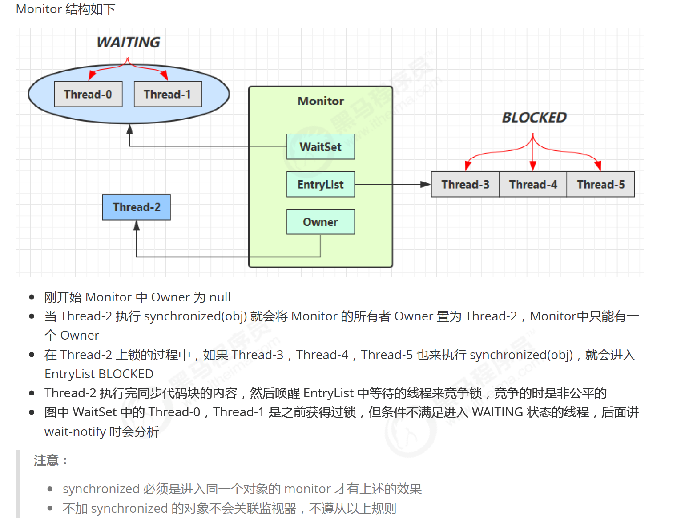
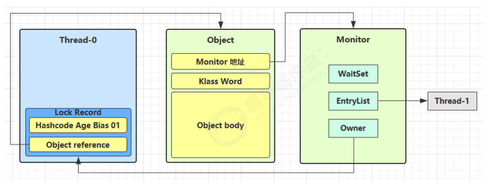
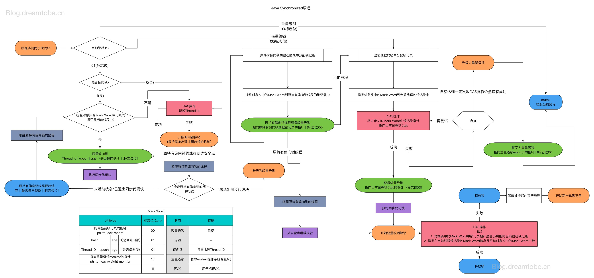
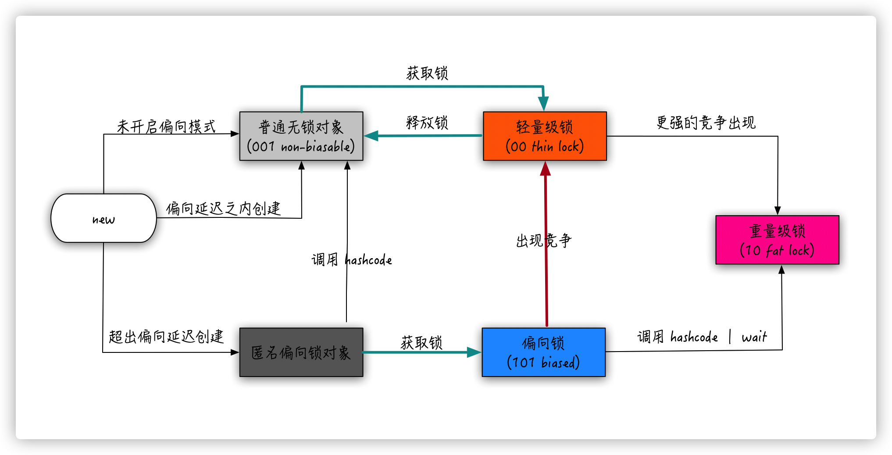

线程安全与锁优化
线程安全
什么是线程安全
“当多个线程访问一个对象时，如果不用考虑这些线程在运行时环境下的调度和交替执行，也不需要进行额外的同步，或者在调用方法进行任何其他的协调操作，调用这个对象的行为都可以获得正确的结果，那么这个对象就是线程安全的。”
相对的线程安全，可以分成五个等级：
线程安全的分类
不可变
不可变的数据，都是线程安全的。不可变的对象引用，加上所有field都是不可变的。如果有得选，尽量连方法都是final的。
绝对线程安全
Vector不是线程安全的。它也会出现并发修改时 Out of Range 的异常（注意，不是 ConcurrentModification 的异常）。
相对线程安全
需要保证对这个对象的单独操作是线程安全的，在调用的时候不需要加上额外的保障措施。对于特定顺序的连续操作，就需要额外的同步来保证调用的正确性了。
线程兼容
可以通过特殊手段做到线程安全的普通类，绝大部分类都属于相对线程安全的。
线程对立
线程对立，是不管调用端是否采取了同步措施，都无法在多线程环境中使用的代码。常见的线程对立的操作还有 suspend()，resume()， System.setIn()，System.setOut()和System.runFinalizerOnExit()。
线程安全的实现
互斥同步（Mutual Exclusion & Synchronization)
这是最常见（也是我们在考虑并发问题的时候，首先应该考虑的万能解决方案，也是《Java并发编程实践》和《Thinking in Java 》中最推荐的做法。）的保障并发正确性的手段。同步是指在多个线程并发访问共享数据的时候，保证共享数据在同一个时刻只被一条（使用信号量的话，多条）线程访问。而互斥是实现同步的一种手段，临界区（Critical Section）、互斥量（Mutex）和信号量都是实现互斥的常见方式。互斥是因，同步是果，互斥是方法，同步是目的。这些同步的手段，同样也会出现在 OS 层面上。同步的终极目标，应该是化并发的乱序，转化为类型无并发时的有序。
在 Java 里面，最基本的互斥手段就是 synchronized 关键字。它经过编译后，会转化为 moniterenter 和 moniterexit 这两个字节码指令（bytecode instructions）。这两个字节码都需要一个 reference 类型的参数来指明加锁和解锁的对象。我们当然都知道，这个reference，不是一个平凡对象实例，就是一个 Class 对象了。
根据虚拟机规范，在执行 monitorenter 指令时，首先尝试获取对象的锁（实际上就是去用线程信息写 markword）。如果这个对象没有被锁定，或者当前线程已经拥有了那个对象的锁，那么把锁的计数器加1。相应地，在执行 monitorexit 时，会对计数器减1，当计数器为0时，锁就被释放了。从某种意义上来讲，这种设计可以在分布式场景下用 Redis 实现。如果获取锁失败了，那么就会进入阻塞状态，直到对象锁被释放为止。虚拟机规范对 monitorenter 和 monitorexit 两条指令的行为描述中，有两点是需要特别注意的。首先，synchronized同步块对同一条线程来说是可重入的，不会出现自己把自己锁死（阻塞）的情况。其次，同步块在已进入的线程执行完之前，会阻塞后面其他线程的进入对于映射到操作系统原生进程的实现，不管是阻塞还是唤醒线程，都需要操作系统的调用帮忙，也就会牵涉到用户态转变入核心态的问题（系统控制权从用户空间转入内核空间）。这种切换需要消耗很多 CPU 时间。这也是为什么它是昂贵的原因，时间是最昂贵的。对于很多简单的getter()、setter（）操作，花在状态切换上的时间，甚至会多过用户代码执行的时间。甚至可以认为，这样的状态切换需要使用很多的汇编指令代码，以至于要使用很多的 cpu 时钟周期。因此synchronized本身是一种重量级（Heavyweight）操作。JVM（注意，不是Java语言） 本身可能会对重量锁进行优化，使用自旋来避免频繁地切入核心态之中（自旋难道就不浪费CPU 时间了吗？）。
J.U.C包里专门提供了Reentrantlock来实现同步。它同样具有 syncrhonized具有的可重入、阻塞其他求锁者的特性。但它还具有三个额外的特点（中、公、多条件，支持某些场景下的任务调度需求）：
- 等待可中断。Lock接口有实现类可以实现试锁，超时试锁等功能。这样synchronized中，其他求锁线程傻等的情况可以避免。
- 公平锁。公平锁指的是按照求锁顺序来分配锁（求锁也是有顺序的）。默认的锁（synchronized 和 ReentrantLock 的默认构造函数）是非公平的，随机给予锁，这样性能更好。synchronized 本身并不内置公平锁，aqs 的公平锁通过允许插队，来减少 cpu 时间片花在调度/cpu上下文切换上的开销，来获得更高的吞吐。很多文档认为，如果排队会带来更多的 cpu 调度，似乎只是人云亦云，也没有讲清楚为什么。非公平锁的吞吐会更好，而公平锁免饥饿。ReentrantLock 默认使用非公平锁。
- 绑定多个条件。在 synchronized 的时代，多个 condition 就意味着多层 synchronized。
synchronized 的性能屡屡被 JVM 的实现者改进，因此还是优先要使用synchronized（《TIJ》、《Java 并发实践》和《深入理解 Java 虚拟机》到此达到了同一结论）。
非阻塞同步（Non-Blocking Synchronization)
也就是我们常说的乐观策略。不需要加锁，也就不需要负担线程状态切换的代价。但代价是，如果真的发生了冲突，乐观操作需要付出的代价就是补偿（compensation）。最常见的补偿，应该就是不断重试（又要引入自旋了）。乐观锁的核心基石，实际上是 CAS（CompareAndSet或者 CompareAndSwap），这两个操作必须是原子化操作，这就要求现代的处理器提供这样的指令原语（instruction primitive）。JVM 虚拟机里，专门通过 Unsafe 包来向上层提供这种原语的语义。
CAS操作有一个很讨厌的 ABA 问题。虽然 ABA 问题本身在大部分情况下不会引起问题，但J.U.C还是提供了一个 AtomicStampedReference操作来避免这个问题（所以说，带版本的原子值才是最安全的）。在大多数情况下，进入互斥同步，还比用这些鸡肋功能要高效（为什么？）。
无同步方案
可重入代码（Reentrant Code）
也叫纯代码（Pure Code）。在它执行的任意时刻中断它，转而去执行另一端代码，再切换上下文回来以后，不会发生任何错误。所有可重入的代码都是线程安全的，但并非所有线程安全的代码都是可重入的。可重入性是基本的特性。
其实这就是函数式编程里的纯函数，所有的状态都由输入参数决定，结果可预测，不依赖其他global状态。这也是为什么函数式编程在高并发下是安全的，他们天然满足栈封闭的标准。
线程本地存储
Thread中含有 ThreadLocalMap，而 ThreadLocal 的变量是 ThreadLocalMap 的 key，ThreadLocal 对应的 value ，被ThreadLocalMap强引用。
Thread -> ThreadLocalMap -> 弱引用 key（也就是我们的 ThreadLocal）
-> 强引用 value（也就是 ThreadLocal 自己的 value，经常被 init 操作的那个）
方法区静态变量 -> 强引用 ThreadLocal
ThreadLocalMap -> 弱引用 ThreadLocal
弱引用的对象拥有更短暂的生命周期。在垃圾回收器线程扫描它所管辖的内存区域的过程中，一旦发现了只具有弱引用的对象，不管当前内存空间足够与否，都会回收它的内存
所以方法区静态变量=null会导致 ThreadLocal 会被回收，而 ThreadLocalMap 的key 会变成 null，再对 ThreadLocalMap 进行一次取值操作 ThreadLocalMap 就会把 value清除。这些条件的任一被破坏，都会反过来造成内存泄漏。
key 经常被声明为静态变量，这个静态变量如果泄露，就是方法区泄露。但 ThreadLocalMap 对 ThreadLocal 的弱引用与它无关，所以它自身的泄露和对静态变量生命周期的管理有关。
value 可能被跨线程混用，所以每个线程处理完以后都要及时 remove。它被 ThreadLocalMap 强引用，但只要频繁使用 ThreadLocalMap，它内部的自带方法都会隐式地 expunge 掉这些过期的 key-也就是说，只要 key 设为 null 了，entry 会被自动消灭。所以 value 的泄露实际上是由 key 的泄露导致的。value 本身并不被 key referenced，它是被 map referenced。
因此，我们需要至少做几件事：
1.尽可能手动地 remove ThreadLocal 的value。
- 尽可能关掉线程（在使用线程池的方案里，这恐怕很难做到）。
- 尽量触发一些 get/set/remove 操作，让 ThreadLocal 的内部操作把的 stale 的 给去除引用。
对象头
需要参考：
在 32 位虚拟机里：
1 | |

我们大致上认为一个对象应该分为 object header 和 object body，然后再把header 分为 markword 和 klass pointer。markword 本身在对象生命周期里面表现得像 union 一样可变，是让研究 synchronized 的人最头痛的。

通常我们可以看到 thread 会维护 lock record/monitor record；monitor 会维护两种 set和 owner（aqs 原理的原型），似乎可以被看成操作系统的 mutext lock 在 jvm 里的句柄；object 本身使用一个 object header。
锁优化


所有的锁优化其实是 synchronized 优化。
自旋锁（Spinning Lock）
一个已经拥有 CPU 执行时间的线程，在求锁的时候，如果直接被阻塞，其实是会降低操作系统的并发性能。所以这种时候可以让线程执行一个忙循环（busy waiting，怎么做到的？ PC jump 到一个一段被插入的代码上吗？）。循环的次数通常是不是很多，也就是10次而已。这个次数可以通过 -XX:PreBlockSpin 调整。当前版本的 JVM 还引入了自适应自旋锁（Adaptive Spinning）。自旋锁不适合长时间等待，那种情况下浪费的 CPU 时间实在太多了。CAS 这种非常小的 Set 值操作适合使用自旋锁。
锁消除（Lock Elimination）
如果 JVM 通过逃逸分析，可以去除掉不必要的同步。
可以消除掉 Reentrantlock吗？根据这篇文，是可以的。
锁粗化（Lock Coarsening）
多个连续的频繁加锁，可能被虚拟机优化为一把大锁。
轻量级锁（Lightweight Lock）
轻量级锁本身是 JDK 1.6 以后才加入的新型锁机制，它名字中的“轻量级”是相对于使用操作系统互斥量来实现的传统锁而言的（Mutex等于重量锁，在不同的场景下又称 Mutext Lock、fat lock。可以认为OS的系统调用提供了并发机制-线程，就会必然提供互斥量机制。）。它不是用来代替重量级锁的，用意是在多线程竞争不激烈的情况下，减少重量级锁的使用，来减少性能消耗。
我们已经知道，对象头（Object Header）分成两个部分（不算Padding的话），“Mark Word” 与 Klass Point。Mark Word 的大小取决于虚拟机的版本，分别是32bits 和 64bits（总之总是字长对齐）。数组对象的 Klass Point 还有一个额外的部分存储数组长度。轻量级锁和偏向锁的关键是“Mark Word”。
“Mark Word”被设计成一个非固定的数据结构，以便在极小的空间内存储尽量多的信息。因此，它的内存布局是可变的。要动态地理解对象的数据结构，可以采用 jol 工具：
1 | |
在代码进入同步块的时候，如果此同步对象没有被锁定（锁标志位为“01”），虚拟机首先将在当前线程的栈帧中建立一个名为锁记录（Lock Record）的空间，用于存储所对象目前的 Mark Word的拷贝（实际上被命名为 Displaced Markd Word）。也就是说，试图求锁的线程局部栈帧可能是不一样的。
然后虚拟机试图使用 CAS 操作尝试将对象的Mark Word 更新为指向 Lock Record 的指针（注意是整个Mark Word）。如果更新成功了，那么线程就拥有了该对象的锁，并且 Mark Word 的锁标志位（Markword的最后两位）转变为“00”。如果这个更新失败了，虚拟机首先会检查对象的 Mark Word是否指向当前线程的栈帧，如果是就说明当前线程已经拥有了这个对象的锁，可以直接进入同步块继续执行，否则说明这个锁对象已经被其他线程抢占了。如果有两条以上的线程争用同一个锁，那轻量级锁就不再有效，要膨胀为重量级锁，锁标志的状态值变为“10”，Mark Word也就变成指向重量级锁的指针（也就是说，不再指向 Lock Record）。
轻量级锁的解锁过程，也必须借助 CAS 操作，把 Displaced Mark Word 的值写到 Mark Word 上。如果替换完成，同步结束。如果替换失败，证明有其他线程常识获取过该锁，那就要在释放锁的同时（可以看出此时锁已经膨胀过了，也就意味着要去释放 mutex，岂不是不对称的操作？），唤醒被挂起的线程。


轻量级锁在发生竞争时，依然会出现锁膨胀，而且还加上了CAS的开销，反而比直接使用重量级锁更慢。使用偏向锁只能根据一种经验假定，“绝大部分锁，在同步周期内是不存在竞争的”。
从这个过程我们可以看出来，mark word里并不是存了线程号，而是直接把mark word指向了目标线程的栈帧，轻量级锁和重量级锁的差别就在于底层是不是会触发 Mutex。
偏向锁（Biased Lock）
偏向锁也是 JDK 1.6 中引入的一项锁优化。它的目的是消除数据在无竞争情况下的同步原语，进一步提高程序的运行性能。如果说轻量级锁在无竞争的情况下使用 CAS操作去消除同步使用的互斥量，偏向锁就是在无竞争的情况下，把整个同步过程都消除掉，连 CAS 都不做了。
偏向锁的偏，是偏心的。这个锁会偏向于第一个获得它的线程，如果接下来的执行过程中，该锁没有被其他线程获取，则持有偏向锁的线程将永远不需要再进行同步。从这点来看，偏向锁导致同步消除了，等同于锁消除了。但锁消除并不等同于偏向锁，可能有JIT自己去掉同步代码的优化。
当对象在第一次被线程锁定的时候，虚拟机会把标志位设置为“01”（至此标志位已经被用尽了）。同时使用 CAS 模式（因为此时还不能保证没有竞争）试图把线程 ID 写入 Mark Word中（此处就真的写入线程号了）。如果CAS成功，那么以后再进入同步块，都不需要执行任何同步操作。
如果这个时候发生锁竞争，则会发生撤销偏向（Revoke Bias），对象回到未锁定状态，然后进入轻量级锁的竞争阶段（难道不是直接进入重量级锁的竞争阶段吗？）。偏向锁是默认打开的，很多推荐的JVM配置都关掉它，因为多线程竞争很激烈的情况下，偏向锁的假定往往会失效（轻量级锁实际上也会失效）。所以可以用 -XX:-UseBiasedLocking 来关闭偏向锁。
所以锁的变化过程就是无锁->偏向锁->轻量级锁->重量级锁。
偏向锁在 JVM 内部的实现实在太复杂了，从 Java 15 开始要逐步 deprecated，在日常的 JVM 使用里面，很多团队为了性能考量，也会直接关闭偏向锁（非常多的 JVM 优化书籍也对使用这种锁提出反对意见）。可以认为，在 Java 6-15期间，偏向锁是默认打开，需要显式关闭的；在 Java 15 以后，偏向锁是默认关闭，需要显式打开，未来应该会删除。
无锁和轻量级锁的差别是：
- 无锁是自旋修改同步资源：无锁的特点就是修改操作在循环内进行，线程会不断的尝试修改共享资源。如果没有冲突就修改成功并退出，否则就会继续循环尝试。如果有多个线程修改同一个值，必定会有一个线程能修改成功，而其他修改失败的线程会不断重试直到修改成功。上面我们介绍的CAS原理及应用即是无锁的实现。无锁无法全面代替有锁，但无锁在某些场合下的性能是非常高的。
- 轻量级锁是自旋抢锁而不是阻塞抢锁：是指当锁是偏向锁的时候，被另外的线程所访问，偏向锁就会升级为轻量级锁，其他线程会通过自旋的形式尝试获取锁，不会阻塞，从而提高性能。
如果硬要对比，可能无锁更像是 AQS 里面的 casSetSate，而轻量级锁可能像是 acquire。